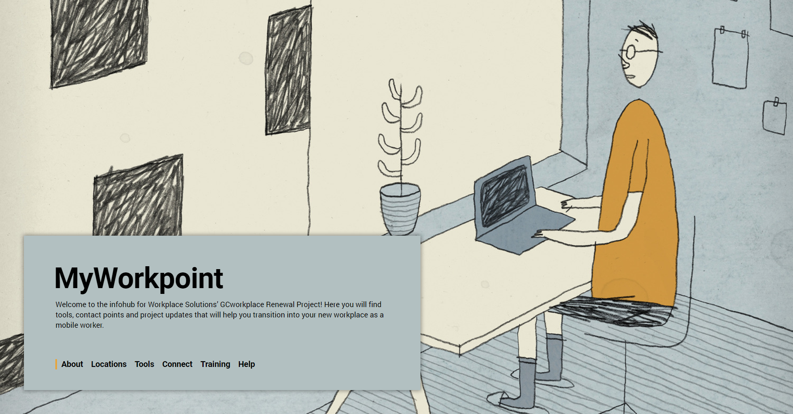

After settling into my Coop at Service Canada as a Project Officer, I started looking on internal job and project posting boards to see if I can find some easy graphic design or web development work to gain additional experience. I got in touch with someone from a seperate department who was in need of a website that would help his office learn and prepare to adopt a more mobile workspace layout.
The site would contain mostly simple text information and thus didn't require overly complicated web design, and after learning how to modernize and fully customize webpages to break out of the government intranet styleguide during a previous project, I decided that the page should be simple, text focused, but still be a little playful.
Visit Site 